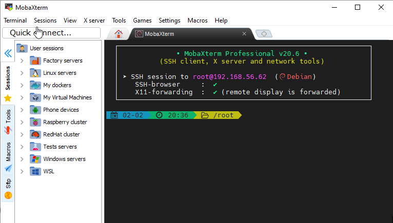
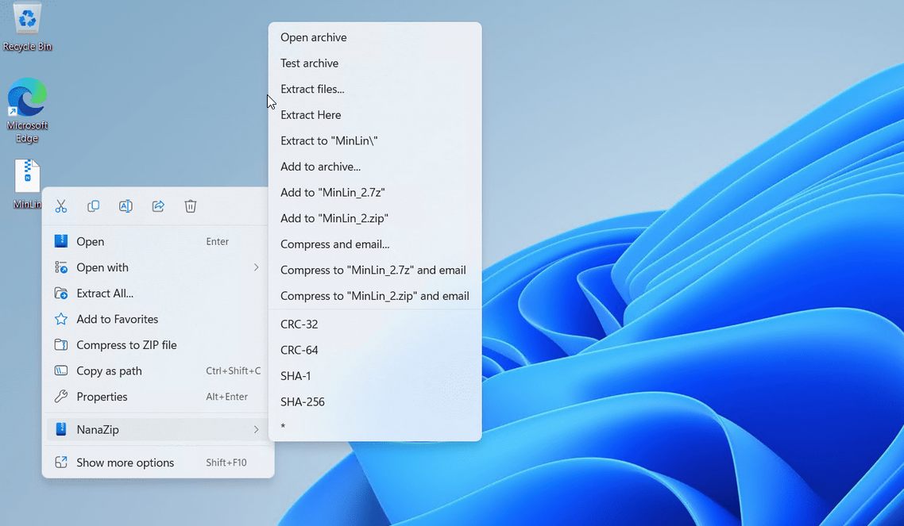

Behind the scenes with Guillermo
Intro
Coming from the automotive industry
I'd take my work seriously and I like the solve problems as quickly as possible, I mean thats my work and that what people want efficient and effective as possible.
A lot of things are very basic, I don't really like gaming accessoires that yell "I'm a gamer" My setup consist of a single screen, I can only focus on one screen at a time. Things need to be clean and out of sight and out of mind basically.
I want my to have my programs and settings
Hardware that I use
I’m mostly (trying) to use business hardware as much as possible.
- Lenovo Thinkstation Intel 11 gen 32GB DDR4 3200mhz (Business PC)
- HP Envy 15" Ryzen 5700u 16Gb DDR4 3200mhz (Consumer PC with business perks)
- Another HP Envy 15" Ryzen 5700u 16Gb DDR4 3200mhz (Consumer PC with business perks)
- Intel Nuc with RealTek nic unfortunately (server) 16GB LPDDR4 3200mhz single channel memory (Consumer)
- Raspberry Pi4
- Pixel 6A
- Pixel 7A
- One Plus 6
Pixel 7a for private interactions (family and friends) and payments.
Pixel 6a for social media and stuff Photo-editing and video-editing, Discord and basically most of the social media apps. See it like a housephone. Also, I used two phones back in the day as MP3-player, because an iPod Touch was more expensive. (Unironcally I have the latest iPod Touch)
One Plus 6 was used for Social media and stuff, I shoot mostly 4K videos with it. Isn't needed anymore since the Pixel devices shoots better photos and videos.
Two Laptops for when the other breaks down, which already happened so I can stay productive. Intel Nuc and raspberry pi are the servers.
Peripherals

- Microsoft Pro Intellimouse Shadow White
- Microsoft Pro Intellimouse Shadow Black
- Logitech MX Master 3
- Logitech G502X
Microsoft Pro Intellimouse
Microsoft Pro Intellimouse most of the time due:
- No gamer look
- Bigger and better and better adjusted for my hands
- Has 1000Mhz
- Macros
-
Angle snapping
-
Logitech TKL Mechanical Keyboard (Red Switches American ANSI-layout small enter)
- Logitech TKL Mechanical Keyboard (Blue Switches American ANSI-layout small enter)
Bare bones keyboard with switches, nothing special. Best part of it, no special drivers or software.
Until the Logitech G502X came into existence...
Software that I use
Windows 11 Pro Programs and modifications
Windows terminal Emulators
Windows Terminal preview Just with slightly newer features, if anything doesn’t work properly I go back to using the normal one. Not the main terminal emulator, but it's getting used enough alongside another terminal emulator.
Windterm & MobaXterm (3rd party Terminal emulator)

Windterm is the actual terminal emulator that I use.
Both have their con and pros, but the explain every feature is a bit to much, since I don't really use all the features.
I just need to remeber the ip addreses and most of the time I remember them from the top of my head, so I use the Windows Terminal Preview.
Advanced terminal emulator, there so a lot of things to say about this software, but I only use it copy or download files easily when I’m in a rush and don’t want to use use rsync, scp or ssh
Hyper-v
Standard Hypervisor on Windows which is included in Windows 11 Pro and obviously Windows Server. One of my favourite hypervisors for the plain stuff, nothing too fancy for Windows 11 Hyper-V, personal preferences, but I have one thing less to install on my system(s).
VirtualBox might be a good one, which works alright, but the extension pack can’t be used in a business environment. It used the Personal Use and Evaluation License (0)
Virtualbox might also be useful when you’re using it with Vagrant.
VMWare Workstation, is useful for me when I’m running desktop Operating Systems like MacOS for example, unfortunately I cannot show how to run MacOS on VMWare Workstation.
Currently using Hyper-V as main Hypervisor Level 1
Using Hyper-V as my main hypervisor on Windows since it integrates really well with the state of Windows. Others do this as well, but it means I don’t need to install another application on Windows. (Yes, you do need to turn on the features) It powers my development server using Rocky Linux 9 (my favourite Linux distribution)
Windows PowerShell
Most of the time it used to install Chocolatey and to add/update Powershell.
There are differences in Windows Powershell and Powershell which I’m not going to cover.
Powershell
“Enhanced version” of Windows Powershell more can be found here
Chocolatey (consumer)
Chocolatey for installing programs unattended on Windows. My own GitHub repository for installing unattended installations can be found over here And the older version of of it over here
Nanazip for Windows 11

Basically another ZIP program, but full integrated into the context menu.
Miscellaneous
- Jira
Linux (Rocky Linux) and programs
Rocky Linux for my server ("Intel Nuc")
Podman/Docker
I'm using Docker with NextCloud and not Podman, some features are missing from Podman.
Things changed rapidly, Docker-compose wasn't available in Podman, but right now it.
Also, I use Docker since it's mostly used software for running containers.
NextCloud
LXD/LXC
I choose the snap-variant which is (corrent me if im wrong) the only option on Rocky Linux.
A lot of things happened in a small time frame.
The apt version was or is still available: https://blog.calenhad.com/posts/2022/09/lxd-accepted-debian/
Very small virtual machines, that are almost as fast as docker or Podman. Better than installing and configuring in KVM/QEMU
Ansible (Post installation configuring the server.)
Too lazy to configure the server everytime I change, which happened a lot, since I always want to check out everyting on bare metal. But I choose RHEL/CentOS/Rocky/Alma -Linux as default Operating System.
Networking
Not fancy right now, since I can't configure or use anoter modem right now.
Collaborating
Actually my website was made in mind of these people and I “collaborate” with people.
Discord

Better Slack alternative talking to people that are interested in I.T. and software engineering. Sharing a lot of knowledge with somebody else. Like Twitter a really chill place to talk about tech.
IRC
Yeah you know which one
We share knowledge with each other and there are dedicated Discord servers for DevOps, Software Engineering and System Engineer.
Websites
books
A very small part of the books the I have.
Mastering Windows Server 2016 Hyper-V.pdf
Mastering_Windows_Server_2022_-_Fourth_Edition.pdf
Mastering-Windows-Server-2016.pdf
MCSA-Windows-Server-2016-Complete-Study-Guide-Exam-70-740-Exam-70-741-Exam-70-742-and-Exam-70-743-by-Panek-William-z-li